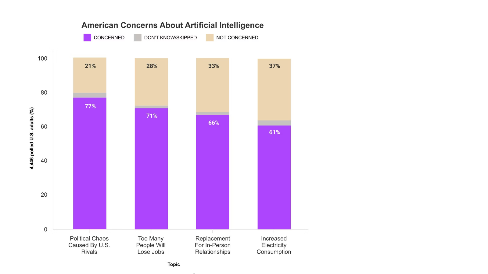
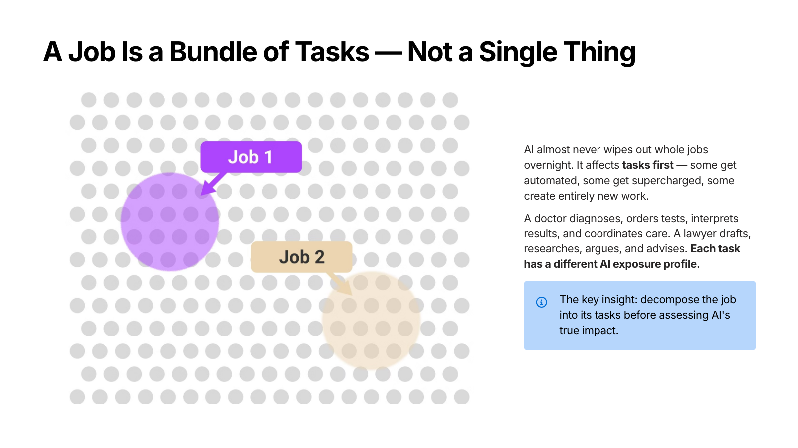
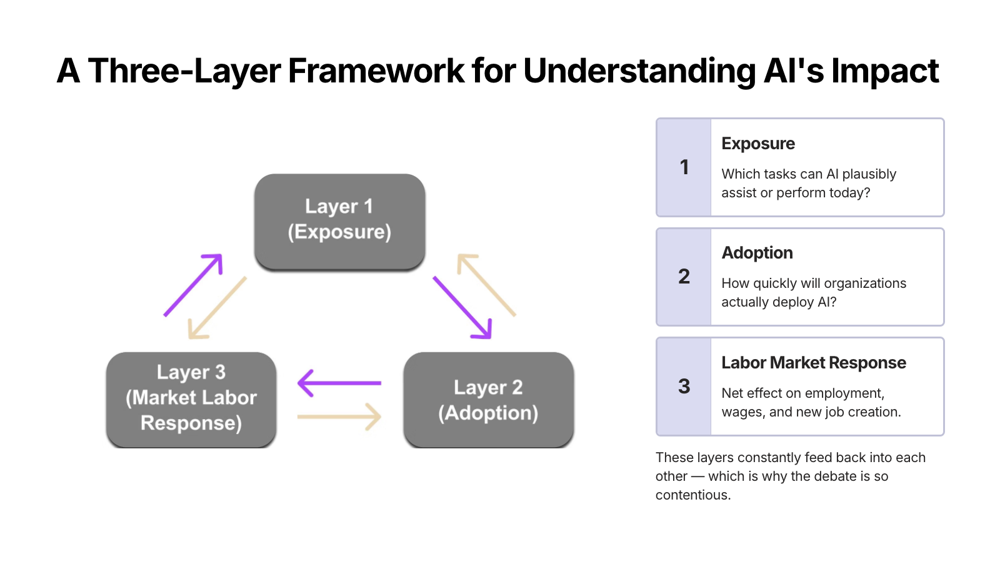
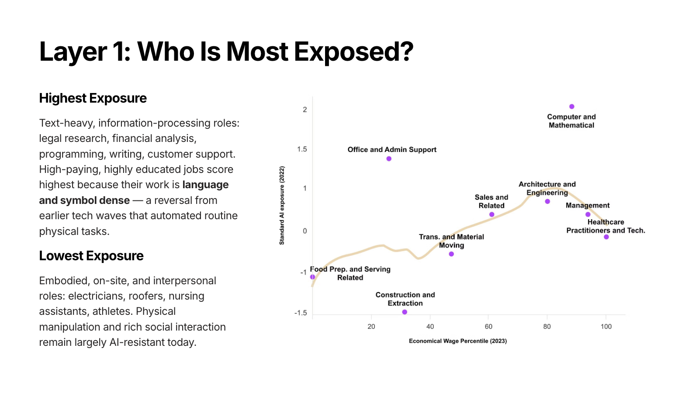
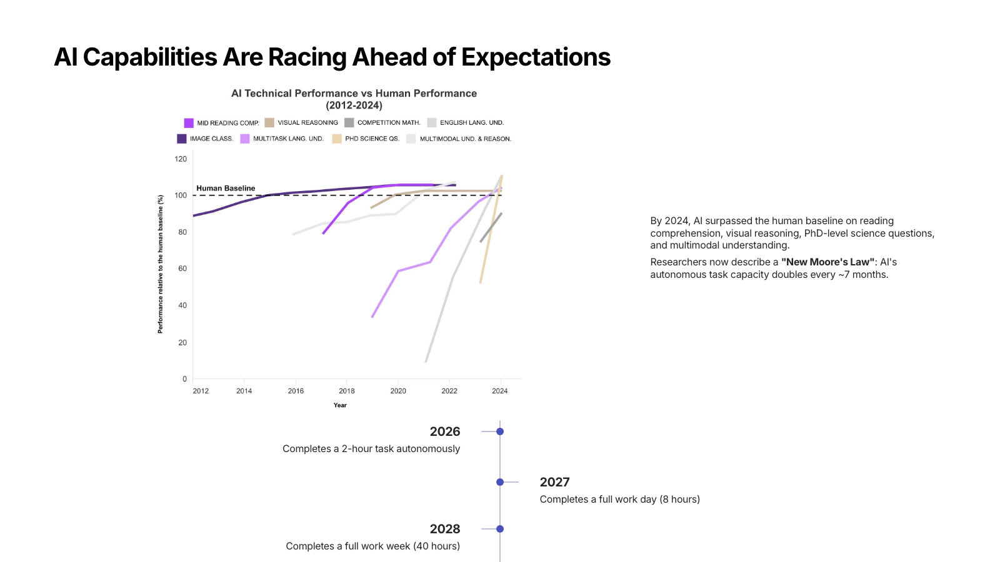
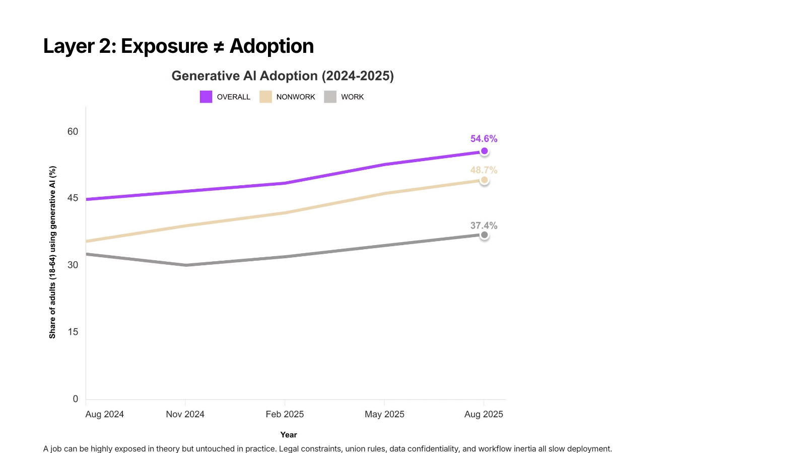
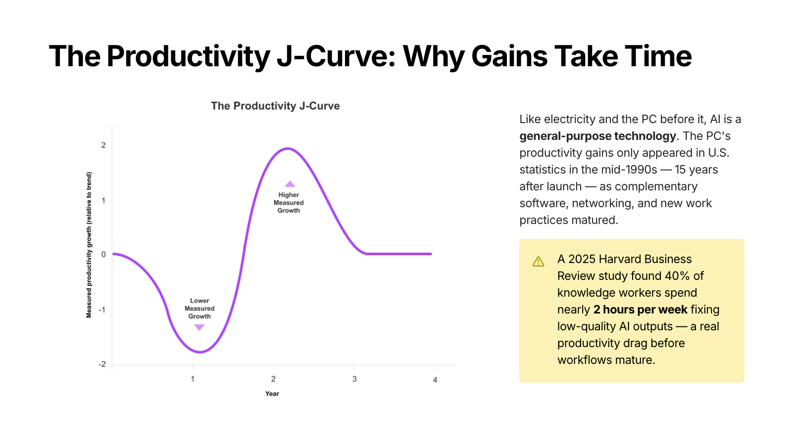
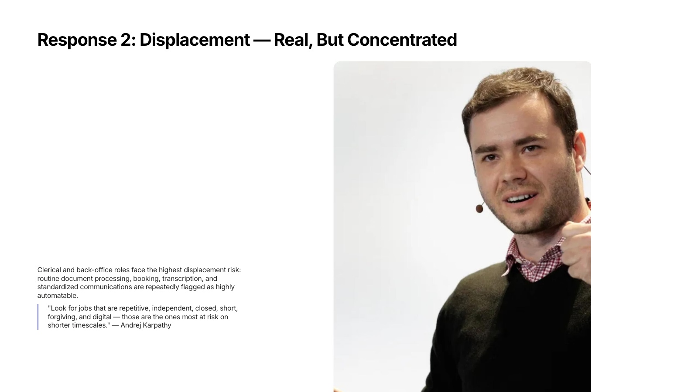
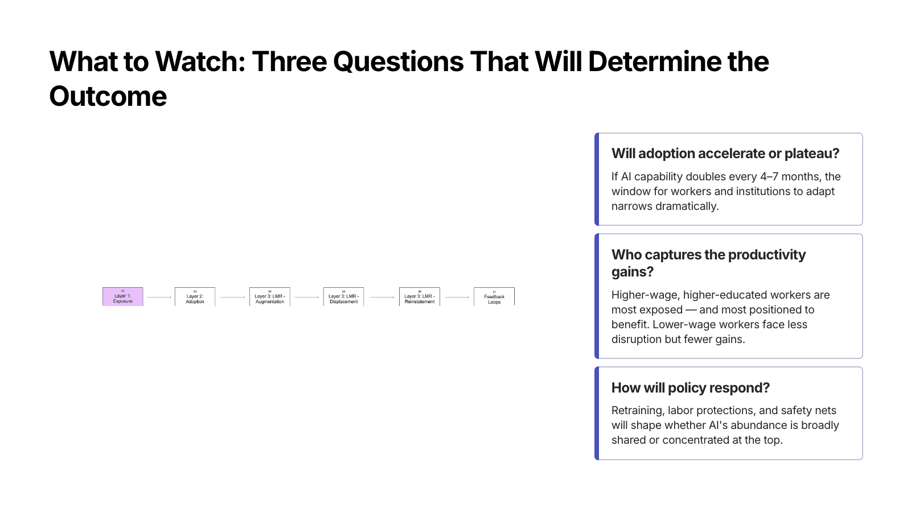

Handled by PR #18985, but still weak
Card 2
Top-level inline source image. The existing orientation-aware logic
is active here, but “landscape inline” still does not guarantee a
strong composition.

Not addressed by PR #18985
Card 3
Landscape source image nested inside columns. This is
the clearest example of the PR not being involved at all.

Not addressed by PR #18985
Card 4
Another landscape source image already structurally committed to a
2-column layout.

Not addressed by PR #18985
Card 5
Landscape chart in columns with explanatory text opposite it. PR
#18985 leaves this untouched.

Not addressed by PR #18985
Card 6
Landscape source visual in columns, plus extra structure below.
This is a nested-layout problem, not an accent-eligibility
problem.

Handled by PR #18985, but still weak
Card 7
Top-level inline source image again. The PR is doing what it says,
but the result is still not clearly intentional enough.

Not addressed by PR #18985
Card 8
Landscape source image nested in columns. PR #18985 is bypassed
here.

Not addressed by PR #18985
Card 10
Portrait source image already nested inside
columns. Even though PR #18985 knows how to treat
portrait images, it never gets to apply that logic once the image
is structurally committed to a column layout.

Not addressed by PR #18985
Card 12
Landscape source image plus companion smart layout, already inside
columns before the PR can act.

{kind=link}
{kind=link}
{kind=link}
{kind=link}
{kind=link}
{kind=link}
{kind=link}
{kind=link}
{kind=link}
{kind=link}
{kind=link}
{kind=link}
{kind=link}